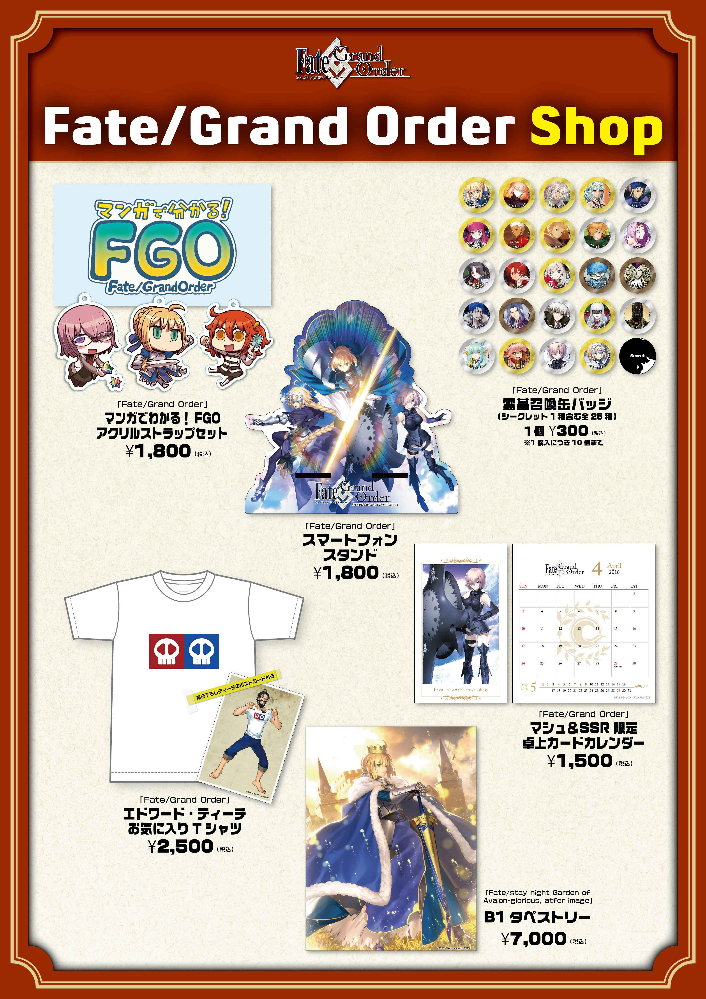
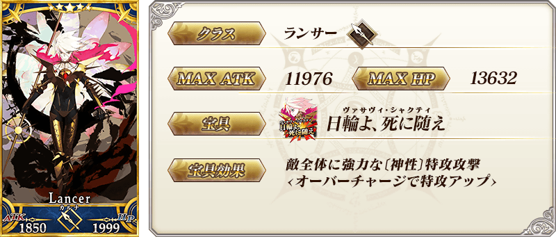
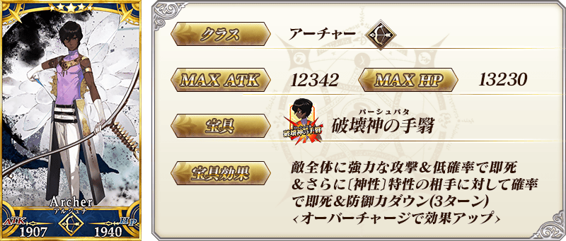
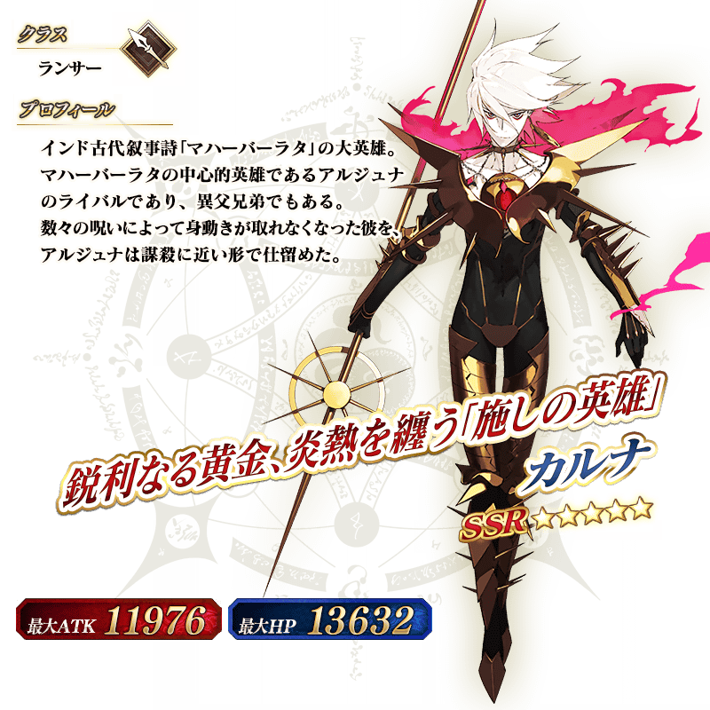
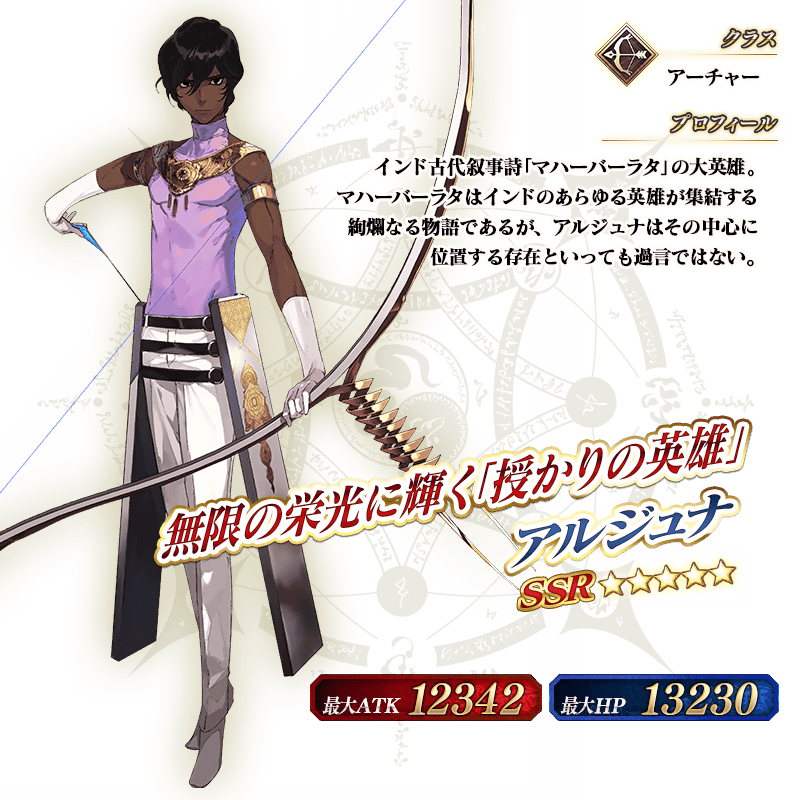

在2016年3月26日(六)・3月27日(日)舉辦的「AnimeJapan 2016」，「Fate/Grand Order」將會出展。
為了紀念出展，對在期間中登入的全員贈送聖晶石。
預定從2016年3月26日(六)AM4:00開始的「AnimeJapan 2016」出展紀念宣傳活動發生沒開始的問題，因此變更宣傳活動期間、領取條件。
【變更前】
◆宣傳活動期間◆
2016年3月26日(六) 3:00～ 3月28日（一）2:59
◆對象◆
在上記期間有遊玩「Fate/Grand Order」的玩家
◆贈送内容◆
聖晶石10個
◆領取條件◆
2016年3月26日(六)3:00～3月28日(一)3:59的期間中，初次進行登入時，贈送至禮物箱。
※期間內未登入的話無法領取。
※禮物只能領取1次。
↓
【變更後】
◆對象◆
在2016年3月28日（一）2:59前有遊玩「Fate/Grand Order」的玩家
◆贈送内容◆
聖晶石10個
◆領取條件◆
2016年3月29日(二)3:00～8月31日(三)22:59的期間中，初次進行登入時，贈送至禮物箱。
※期間內未登入的話無法領取。
※禮物只能領取1次。
對上述的活動期間、領取條件變更感到抱歉，會向對象的玩家做出以下對應。
【對象】
在2016年3月28日（一）2:59前有遊玩「Fate/Grand Order」的全部玩家
【對應内容】
・聖晶石5個
【配布方法】
在禮物箱配布
【配布期間】
2016年3月29日(二)AM3:00～2016年8月31日(三)22:59
非常抱歉麻煩到正在使用的玩家。
◆「AnimeJapan 2016」舉辦概要◆
時間：2016年3月26日(六)・3月27日(日)
會期時間 9:00～16:00
場所：東京ビッグサイト (〒135-0063 東京都江東区有明3-11-1)
東展示棟 東1～6ホール [メインエリア]
官方網站：https://www.anime-japan.jp
◆「Fate/Grand Order」展攤情報◆
在「AnimeJapan 2016」會場內的「Fate/Grand Order」展攤中，準備著各種的企畫。
下列介紹出展內容的一部分。
・設置Fate/Grand Order原創商品抽獎的實體召喚區
・展示包含從主線關卡第五章的初登場Servant11位的等身大立牌
・展示瑪琇・基利艾拉特的寶具ロード・カルデアス(實際尺寸)
・展示阿爾托莉亞・潘德拉剛的寶具エクスカリバー(實際尺寸)
・展示フォウくん絨毛玩偶
・展示動畫・CM的原畫
・設置能購買原創商品的銷售區
※預定販賣的商品如下。

※關於實體召喚區，預定配布兩日整理券。
※整理券賣完就會結束。
◆「Fate Project 2016」舞台情報◆
在3月27日(日)12:35〜13:15 RED舞台，舉辦發表Fate作品的最新情報的舞台活動「Fate Project 2016」。
活動預定演出有杉山紀彰、川澄綾子、島﨑信長、種田梨沙等人。
也會進行來自「Fate/Grand Order」不久後預定配信的有關主線關卡第五章的最新情報等的發表。
※舞台觀賞抽選已結束。關於在舞台的發表內容會在舞台結束後於官方網站告知。
另外，此場舞台會在Niconico生放送直播。詳細請見節目頁面。
在來自「AnimeJapan 2016」的情報解禁前，將在3月25日（五）23點00分～00點30分放送的動畫「Fate/Zero」節目內放送主線關卡第五章的TV廣告。
【 「Fate/Grand Order」TVCM概要 】
■放送預定時間：2016年3月25日（五） 23點00分～00點30分 動畫版「Fate/Zero」節目内
■放送電視台：在TOKYO MX・とちぎテレビ・群馬テレビ・BS11全國同時放送


◆「迦爾納・阿周那Pick Up召喚」期間◆
期間：2016年3月23日(三)15:00～3月30日(三) 12:59
以期間限定舉辦「迦爾納・阿周那Pick Up召喚」！
來自預定3月下旬～4月上旬配信予定的主線關卡第五章的先行，在第五章登場的Servant「★5（SSR）迦爾納」 、「★5（SSR）阿周那」2位以每日交替Pick Up！
詳情請確認在召喚左下的召喚詳細。
※迦爾納、阿周那在Pick Up期間結束後，預定在五章配信時追加到故事召喚。
在Pick Up期間中，Pick Up Servant的出現機率UP！ ！
10次召喚★4(SR)以上1枚確定和★3(R)以上的Servant1位確定！
※★4(SR)以上確定包含Servant和概念禮裝。
※所謂「Servant出現機率UP」意指比同稀有度的Servant出現機率更高的設定。
| Pick Up日 | 每日交替Pick Up Servant |
|---|---|
| 3月23日(三)15:00～22:59 | 迦爾納、阿周那 |
| 3月23日(三)23:00～3月24日(四)22:59 | 迦爾納 |
| 3月24日(四)23:00～3月25日(五)22:59 | 阿周那 |
| 3月25日(五)23:00～3月26日(六)22:59 | 迦爾納 |
| 3月26日(六)23:00～3月27日(日)22:59 | 阿周那 |
| 3月27日(日)23:00～3月28日(一)22:59 | 迦爾納 |
| 3月28日(一)23:00～3月29日(二)22:59 | 阿周那 |
| 3月29日(二)23:00～3月30日(三)12:59 | 迦爾納、阿周那 |
※在迦爾納Pick Up召喚日不會出現阿周那。反之，在阿周那Pick Up召喚日不會出現迦爾納。
※請注意每天交替Pick Up的Servant會變更。
※關於其他的Servant・概念禮裝，請在聖晶石召喚畫面左下的「召喚詳細」確認。



